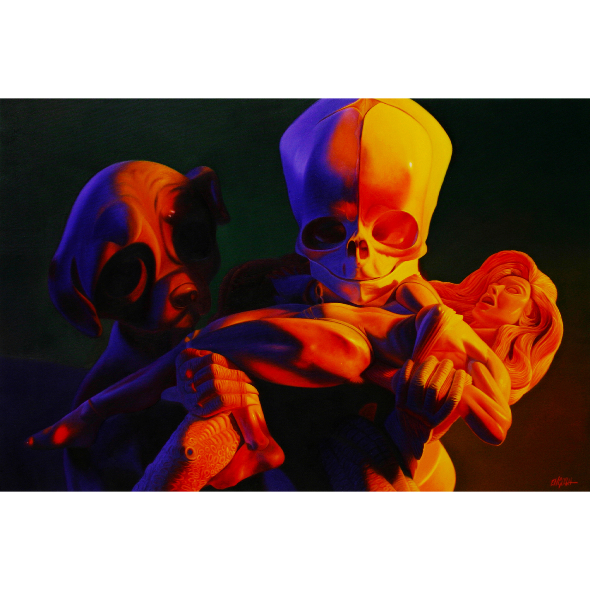
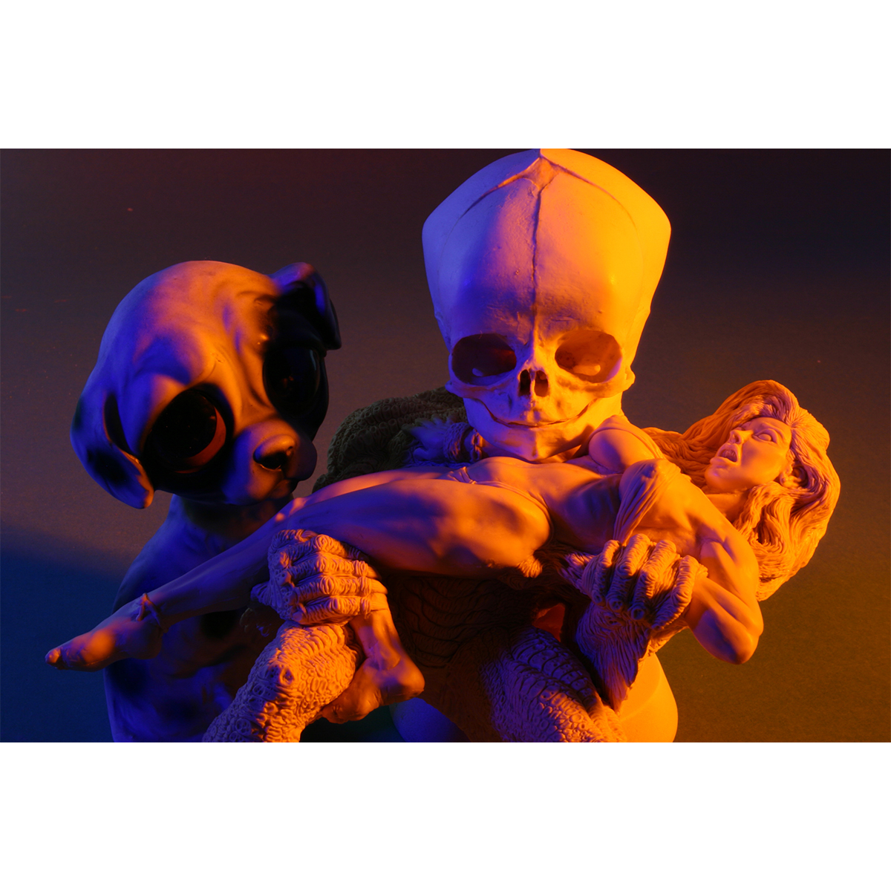

Literature
Ron English, Abject Expressionism: The Art of Ron English (San Francisco: Last Gasp, 2007), p. 172. ISBN 978-0867196894.
Ron English, Fauxlosophy (Darlington: Carpet Bombing Culture, 2016), p. 170. ISBN 978-1-908211-45-3.
Ancillary Documentation
